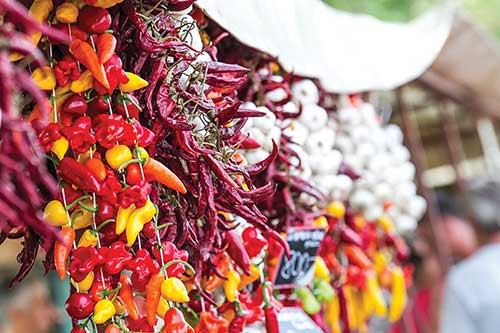
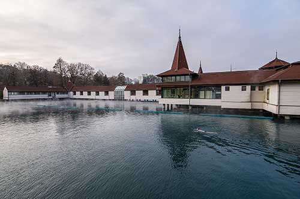

Upload Report:
Balaton Insider 2020.indd
Uploaded at: 2021 Aug 5., 21:43
Missing images:
tihany_map.tif
kali_map.tif
oreg-harang-borozo-etterem-heviz-egregy_heim-alexandra_20160616.tif
rockburger-cirkusz-balatonszemes-ko-ro-si-tama-s-5466.tif
the-rusty-coffee-box-balatonakarattya_korosi-tamas_20170815.tif
furmint-2020-02-ko-ro-si-tama-s-6950.exact1980w.jpg
gilvesy-varadi-furmint-ko-ro-si-tama-s-6946.tif
u-nnepi-borok-2019-ko-ro-si-tama-s-7096-exact1980w.exact1980w.jpg
u-nnepi-borok-2019-ko-ro-si-tama-s-7088-exact1980w.exact1980w.jpg
u-nnepi-borok-2019-ko-ro-si-tama-s-7092-exact1980w.exact1980w.jpg
tihany-godrosi-strand_korosi-tamas_20170620.tif
Csendesdulo - Badacsonyors - 2018.04.10 - KT (4).jpg
Festetics-kastély - Kiripolszky Csongor_0124.tif
wlbalaton-20190628-4-zamardi-kohegyi-kilato-001.tif
keszthely_map.tif
_Kis Balaton_Kiripolszky Csongor.tif
Hévízi tófürdő - KT (48) (1).tif
szepkilato.bgyorok_Sebestyén Blanka .dsc.2073.gr.tif
Balaton Múzeum - Kiripolszky Csongor_0162.tif
Vonyarc kápolna_Sebestyén Blanka2.tif
promena.d.ka.ve.ha.z.balatongyo.ro.k.korosi.tamas.11.tif
monisuti-gyenesdias_korosi-tamas_20180702.tif
tulipan-kavehaz-keszthely_korosi-tamas_20170601.tif
dias.sziget.vezetett.tura.10.korosi.tamas.tif
anno-taverna-balatonsza-rszo_korosi-tamas_20170908.tif
kis-balaton-kutatohaz-fenekpuszta_szecsi-gabor_20140502.exact1980w.tif
fekete.istvan.emlekhaz.korosi.tamas.4.1.tif
Szepkilato_KalloPeter.tif
fu-sto-lgo-marha-keszthely-ko-ro-si-tama-s-3074.tif
brix-bistro-heviz_korosi-tamas_20171117.tif
bujdoso-pinceszet_sebestyen-blanka_20150923.exact1980w.tif
szent.la.szlo.nemzeti.emle.khely.la.togato.ko.zpont.somogyva.r.ko.ro.si.tama.s.1634.tif
balaton-csavargozos-balatonboglar_kiripolszky-csongor_20150512.exact1980w.tif
FeelusionWLB18-33.tif
fonyodkutyheim2.3.tif
rock-burger-ko-ro-si-tama-s-2348.tif
shutterstock_547932892.tif
Rozmaring Kiskert - Korosi Tamas_3681.tif
Zamárdi kalandpark - KT (28).tif
balaton-gokart_heim-alexandra_20160629.exact1980w.tif
balcsiexplainer.ai
szentbekkalla.kali..heim.alexandra.006.1.tif
vonyarcvashegyi-vizisi-es-wakeboard-palya-vonyarcvashegy_korosi-tamas_20160816.exact1980w.tif
Lidl-Balaton-atuszas-11_forras_futanet.hu.tif
ÚJ_homola-borterasz_korosi-tamas_20180720 (1).tif
apa-tsa-gi-rege-cukra-szda_korosi-tamas_20180816.exact1980w.tif
zirci-ciszterci-apatsag-es-romkert-zirc_heim-alexandra_20160915 (1).tif
emberi-komedia-szoborcsoport-kovagoors-kornyi-to_korosi-tamas_20160409.exact1980w.tif
szigligeti-var_korosi-tamas_20160421.exact1980w_1.tif
Budapest_view.jpg
Insider_AD_online promo.jpg
igali-gyogyfurdo-igal_kiripolszky-csongor_20140912.tif
kunffy-lajos-emle-kha-z-somogytu-r-ko-ro-si-tama-s-2565.tif
hajma-ske-ri-tu-ze-rlaktanya-ko-ro-si-tama-s-6504-1.tif
buzalelke-kisapati_heim-alexandra_20170922.tif
varkavezo-es-fagyizo_mudra-laszlo_20180726.tif
badacsony_map.tif
balatonibob-szabadidopark_korosi-tamas_20180605.tif
bivalyrezervatum-balatonmagyarod-kapolnapuszta_kiripolszky-csongor_20141003.tif
zobori-e-lme-nypark_korosi-tamas_20180817.tif
veganeeta_korosi-tamas_20180426.tif
fured-wakeboard-centrum_mudra-laszlo_20180728.tif
wlbalaton-20190628-6-balatonalmadi-support-naplementes-supolas-023.tif
hegyi-kereszt-balatonfured_korosi-tamas_20180605.exact1980w.tif
tihanyi-bences-apatsag-tihany_korosi-tamas_20170407.exact1980w.tif
tagore-setany_kallo-peter_20180505.exact1980w.tif
levendulaszuret-tihany_korosi-tamas_20160622.exact1980w.tif
boglar_map.tif
koloska-volgy-tura-balatonfured_korosi-tamas_20170302.exact1980w.tif
orvenyesi-vizimalom-orvenyes_korosi-tamas_20160527.exact1980w.tif
baratlakasok_korosi-tamas_20160402.exact1980w.tif
sebestyen.blanka.20150819.jokai.villa.bfured.dsc.1121.gr.1.tif
neked-foztem-balatonfured_korosi-tamas_20180705 (1).tif
zelna-balatonfured-20190814-heima-009.tif
bergmann-cukraszda-petofi-sandor-utca-balatonfured-ifj-bergmann-erno_korosi-tamas_20180719.tif
nagyi-kertje-teazo-aszofo_korosi-tamas_20180518_2.tif
hamzagergely-portre-20200602-heima-003.tif
gizella-kila-to-gulya-dombi-parkerdo-veszpre-m_korosi-tamas_20180202.tif
Fonyod_villa__KT_9355.tif
veszprem-allatkert_kiripolszky-csongor_20141009.tif
veszpremvolgy_korosi-tamas_20180426.tif
kali-medence_kallo-peter_20180506_2.tif
kali-medence_kallo-peter_20180506.exact1980w (2).tif
sebestyen.blanka.20151106.templomrom.dorgicse.dsc.9869.gr.1.tif
szentbekkallai-kotenger_korosi-tamas_20160409.exact1980w.tif
to.ti.hegy.2018.korosi.tamas.8830.tif
balatonhenye-20190814-heima-029.tif
szent-balazs-templomrom-szentantalfa_korosi-tamas_20160415.tif
salfoldi-paloskolostor-rom_heim-alexandra_20160527.exact1980w.tif
sb.20150703.kishegy.dsc.0422.gr.1.tif
palffy-borterasz_korosi-tamas_20160513.tif
palffyattila-portre-20200602-heima-002.tif
kekkuti-kecskefarm-kekkut_korosi-tamas_20180719.tif
suzanne-daucher-pecsely_korosi-tamas_20180518_2.tif
neked-foztem-gasztrokocsma-zanka_heim-alexandra_20170607.tif
to-ti-hegy_korosi-tamas_20180704.tif
szent-gyorgy-hegyi-bazaltorgonak-tanosveny-lengyel-kapolna-szent-gyorgy-hegy_heim-alexandra_20160916.exact1980w.tif
szent_gyorgy_heim-alexandra_20170519.exact1980w.tif
szigligeti-var_korosi-tamas_20160421_2.exact1980w.tif
gulacs_korosi-tamas_20180704.exact1980w.tif
siofok_map.tif
Callmeyer_Ferenc_fortepan_tatika_etterem.tif
egry-jo-zsef-emle-kmu-zeum-badacsony-ko-ro-si-tama-s-8678.tif
fortepan_hableany_53373.tif
varosi-strand-badacsonytomaj_korosi-tamas_20160623.tif
badacsony-hableany-holvenyikristof-20190615-6791.tif
papwines-portre-20200530-heima-001.tif
csendes-dulo-szolobirtok-badacsonyors_korosi-tamas_20180427.exact1980w.tif
frissterasz-badacsonytomaj_korosi-tamas_20160623.tif
gulacs_korosi-tamas_20180704.tif
bringa_heima_003.jpg
Zamardi nagystrand - Balkanyi Laszlo.1044.tif
bringa_heima_001.jpg
keszthelyi-ka-rmelita-bazilika_korosi-tamas_20180821.tif
sutismoni-portre-20200528-heima-001.tif
pocz-pinceszet-balatonlelle_mudra-laszlo_20180727.exact1980w.tif
balatonlelle.szent.donat.kapolna.korosi.tamas.2.1.tif
gombkilato_kiripolszky-csongor_20180409.exact1980w.tif
sebestyen.blanka.20150922.varhegyi.szeplato.fonyod.dsc.4930.gr.tif
kripta-villa-fonyod_korosi-tamas_20160609.tif
szaplonczay_villa_korosi-tamas_20171020.tif
geleta-cukraszda_mudra-laszlo_20180727.tif
Siofok_nagystrand.tif
kistucsok-20190505-heima-0006.tif
kristinus-boraszat-kethely_mudra-laszlo_20180727.tif
garamvari-szolobirtok-balatonlelle-kishegy_kiripolszky-csongor_20140807.exact1980w.tif
balatonfenyves-nagyszabadstrand_balkanyi-laszlo_20140726.tif
boglari-buborek-elmenyfurdo-balatonboglar_heim-alexandra_20160831.tif
szantod-szantodrev-tihany-tihanyrev-komp_korosi-tamas_20160401.exact1980w.tif
siofok-viztorony_korosi-tamas_20160507.tif
toreki-tavak-tanosveny-siofok_korosi-tamas_20160508.tif
wlbalaton-20190628-4-zamardi-kohegyi-kilato-013.tif
deli-part-bbq-siofok_korosi-tamas_20180707.exact1980w2.tif
lerant-pince-badacsonytomaj_korosi-tamas_20160817.exact1980w.tif
egy-csipet-nadas-siofok_korosi-tamas_20160728 (1).jpg
orba-n-juha-sz-zsuzsa-porte-ko-ro-si-tama-s-5342.tif
shutterstock_111650024.tif
melba-cafe-sio-fok-szabo-ge-za-szabo-ne-nochta-ildiko_korosi-tamas_20180719.tif
20140730-siofok-aranypart-strand-dsc-0600-gr.exact1980w.tif
wlbalaton-20190628-5-balatonszabadi-kossuth-szobor-005.tif
szelcsend-balatonfoldvar_korosi-tamas_20170420.tif
kopasz-hegy_korosi-tamas_20160513.exact1980w.tif
20180819_Napfelkelte_forras_futni_szep.tif
ko-fagyi-mindszentkalla_korosi-tamas_20170714.tif
Very low-resolution, unusable images:
fonyodi-piac-fonyod_balkanyi-laszlo_20140726 (1).tif ::: 172 dpi

hevizi-tofurdo_korosi-tamas_20170208.tif ::: 176 dpi

tiki-beach-koviubi-20190811-heima-003.tif ::: 176 dpi